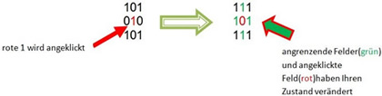

BitOut
- Bei Bitsout ist ein 5x5 Feld vorgegeben
- Für das Beenden des Spieles gibt es, basierend auf der Anzahl der benötigten Klicks, Punkte. Ausgangspunktzahl ist 100 Punkte, wobei jeder Klick die Punktzahl um 1 reduziert.
- Die Felder haben zwei Zustände "0" und "1"
- Beim Klick eines Feldes verändert sich der Zustand des Feldes und der angrenzenden Felder
- Bsp.:

- Ziel des Spiels ist es alle Felder auf "0" zu schalten